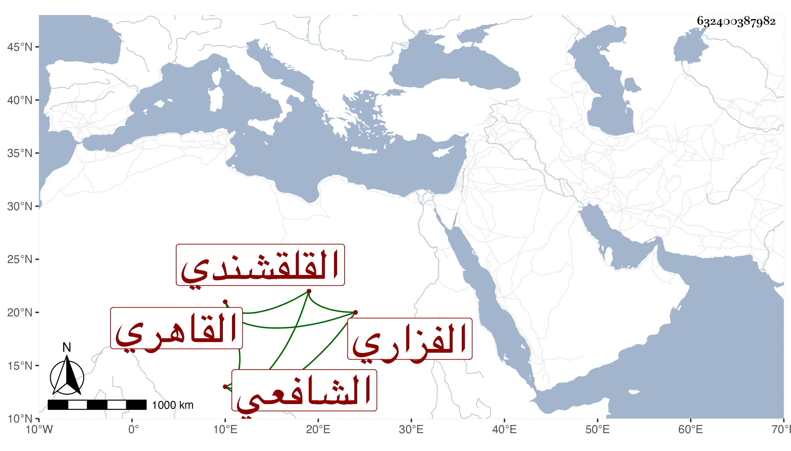

0902Sakhawi.DawLamic.ITO20230111-ara1.EIS1600.632400387982
Biography ID: 632400387982
25
أحمد بن علي بن أحمد بن عبد الله الشهاب بن الجمال أبي اليمن الفزاري القلقشندي ثم القاهري الشافعي والد النجم محمد الآتي . ولد سنة ست وخمسين وسبعمائة واشتغل بالفقه وغيره وسمع على ابن الشيخة ومن في وقته . وكان أحد الفضلاء ممن برع في الفقه والأدب وكتب في الإنشاء وناب في الحكم وشرح قطعا من جامع المختصرات بل شرع في نظمه وعمل صبح الأعشى في قوانين الإنشا في أربع مجلدات جمع فيه فأوعى وكان يستحضر أكثر ذلك مع جامع المختصرات والحاوي وكتابا في أنساب العرب ، وهو ممن قرض سيرة المؤيد لابن ناهض مع تواضع ومروءة وخير ، مات في يوم السبت عاشر جمادى الآخرة سنة إحدى وعشرين وله خمس وستون سنة . ذكره شيخنا في معجمه وأنبائه والمقريزي والعيني وآخرون وسمى العيني والمقريزي والده عبد الله وهو وهم وقال آخر أنه برع في العربية وعرف الفرائض وشارك في الفقه وسمع الحديث ونظم ونثر وأرخ وفاته في ليلة السبت عاشر جمادى الثانية .
